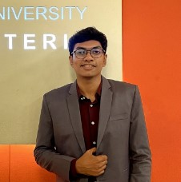

Faiaz Mohammad Tiham
Web Developer
Objectives
Aspire to dedicate myself completely to my job.
My working atmosphere should be one of mutual
respect and cooperation. I have a propensity for
acquiring new knowledge, adjusting to new
surroundings, and meeting deadlines.
Work Experiences
- Brac University
- Student Tutor (Jan 2024 to Present)
- Provide comprehensive academic consultations
- Collaborate with faculty for fair assessment
- Pioneer innovative tutoring methods
Extracurricular Activities
- BRAC University Computer Club
- Director of Human Resources (Jun 2022 to Oct 2023)
- Planning Meetings and Activities
- Mentoring members of the department
- Working with other Executive Bodies and
Governing Body members as a unity to establish
short and long-term goals
Education
- BRAC University (Jan 2020 - Present)
- Bachelor of Science in Computer Science
- Dhaka College (2017 - 2019)
- Higher Secondary School Certificate in Science
- Motijheel Govt. Boys' High School (Jan 2008 - 2017)
- Secondary School Certificate in Science
Contact
Facebook |
LinkedIn |
tiham909@gmail.com